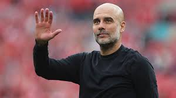

Messi can't stop! Assist and couple of goals against New York City FC
18 minutes ago
"He's old enough to make his own decisions" – Bayern bosses react to speculation over Kane's future
Bulinews · 26 minutes ago
Real Madrid refuse to meet demands made by forward’s camp, not ruling out a sale next summer
Madrid Universal · 3 hours ago

Baleba vs Wharton vs Anderson – Who should Man United sign?
The Peoples Person · 2 hours ago

Guardiola remains impressed with Foden's level at Man City
Stats Perform · 41 minutes ago

The only manager to win the UCL in 4 different counties
VJ source . 12 minutes ago
Injury prone player becomes the best player on planet earth-2025
VJ source . 1 week ago
Uganda's finest will play in the CAF champions league
VJ source . 3 week ago
The stage is set for the big dogs Africa has to offer
VJ source . 3 week ago